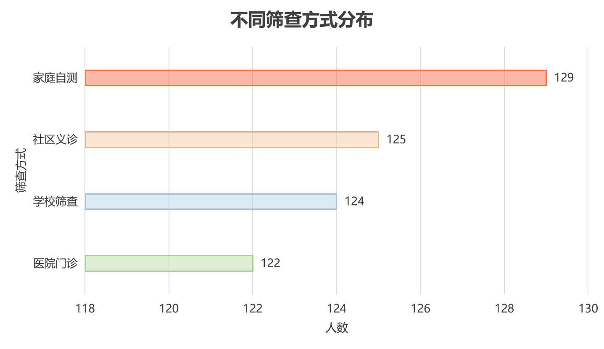
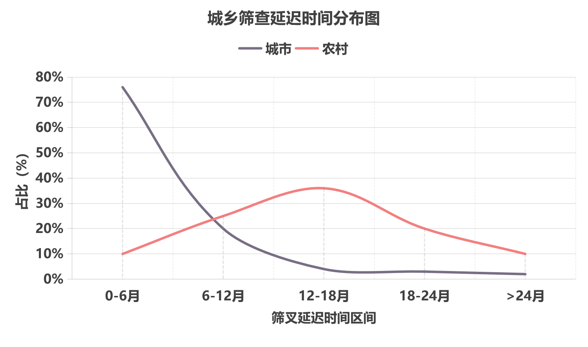
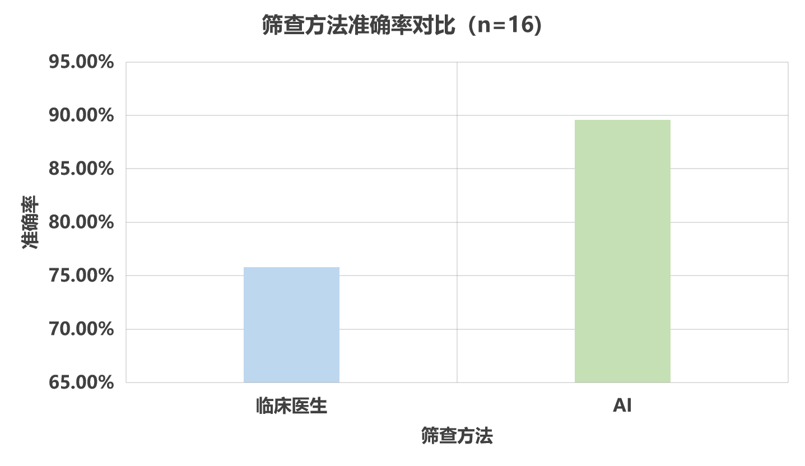

星途：AI早筛·精准康复
立即免费筛查
0-6岁儿童专属，哈医大团队背书，早筛1次，覆盖语言/社交/运动3大发育维度
儿童信息
年龄/性别/生长环境
拍摄
互动/表达/运动
AI评估
5分钟生成报告
对接机构
精准匹配康复资源
AI筛查准确率
0%
较传统量表提升35%
已服务儿童
0
2024年北京/广州/成都试点
志愿者规模
0
留存率65%，超行业均值20%
区分能力准确率
0%
针对自闭症和其他发育问题
覆盖黑龙江省城市
0
如大庆、佳木斯、齐齐哈尔
合作康复机构
0
包含三甲医院及专业康复中心



产品创新
AI智能筛查系统+家庭端轻量化自主筛查工具+方案匹配系统
AI智能筛查系统
5分钟完成筛查，准确率92%，大幅降低基层漏诊率
核心技术源自哈医大附属第三医院与西安文理学院儿童认知科学实验室联合研发，基于10万+北方儿童发育数据训练，针对东北方言环境下的语言发育评估做了专项优化，准确率比通用量表高35%
提示：鼠标悬浮即可静音自动播放演示视频
注意：①本筛查工具经哈医大附属第一医院验证，准确率达92%； ②筛查仅为初步评估，不能替代临床诊断； ③高风险儿童可直接走医院绿色就诊通道； ④报告可下载打印，支持医保报销时作为辅助材料； ⑤复查周期建议低风险6个月1次，中高风险3个月1次。
“早筛-康复”数据闭环与方案匹配系统
打通筛查数据与康复方案，个性化匹配干预资源，降低家庭负担超80%
数据闭环流程
筛查数据上传
家庭端筛查结果自动同步至云端数据中台
风险等级评估
系统自动分级，生成个性化干预建议
干预效果追踪
定期回访更新数据，动态调整干预方案
康复资源匹配
按地域、资质、价格精准匹配康复机构
个性化干预建议
低风险干预建议
建议每月通过网站记录儿童发育里程碑，定期参与线上育儿课程。日常可多进行亲子互动游戏，如绘本共读、角色扮演等，促进儿童社交和语言能力发展。每6个月进行一次复查，持续监测发育情况，无需专业干预，但需保持关注。
个性化康复方案展示

社交能力提升
基于筛查数据定制的场景化社交训练方案

语言发育干预
针对语言迟缓特征的分级训练计划

行为矫正方案
适配刻板行为特征的正向引导方案
家庭端轻量化自主筛查工具
微信小程序10分钟自主完成，无需专业设备，基层筛查可及性从30%提升至90%
核心技术特性与量化指标
基于微信小程序开发，通过游戏化引导、轻量化适配、AI自动分析，破解“筛查门槛高”核心痛点
游戏化引导交互
通过指令互动、玩具吸引等趣味流程，自然拍摄10分钟日常互动视频，自动捕获关键行为片段
零专业知识
筛查耗时
较传统筛查方式大幅节省时间成本，提升筛查效率
≤10分钟/例
↓80%耗时
适用年龄
覆盖儿童关键发育阶段，早筛早干预效果更佳
0-6岁
全年龄段覆盖
全设备轻量化适配
核心算法体积≤30MB，适配≥800元智能手机，弱网络环境支持离线拍摄后同步
≤30MB
上传流量
优化视频压缩算法，降低网络带宽要求
≤50MB
弱网友好
设备适配
兼容市面主流智能手机，无需高端设备
≥800元手机
95%设备兼容
快速报告生成
视频上传后≤5分钟生成评估报告，含风险等级与5维行为特征解读，无需专业等待
≤5分钟
可及性提升
突破地域限制，大幅提升基层筛查覆盖率
30%→90%
↑60%
准确率
AI算法精准识别，结果可靠度高
92%
↑16.7%
家庭自主筛查场景
家长独立操作，无需专业知识，随时随地完成筛查
操作门槛：零专业知识要求
适用年龄：0-6岁儿童
核心价值：避免跨区域奔波，节省时间成本
基层机构赋能场景
为县域/农村基层机构提供标准化筛查工具
培训要求：无需专业医护培训
覆盖提升：填补70%基层筛查空白
批量筛查支持场景
适配学校、妇幼保健院等批量筛查需求
功能支持：多用户同时筛查+数据导出
效率提升：筛查效率提升5倍
携手专业康复机构 共筑自闭症精准干预生态
AI早筛技术落地一线，赋能康复服务提质增效

成华爱慧、成都大鱼、善工家园三家机构训练场景实景拼接图

成华爱慧特殊儿童关爱中心

成都大鱼儿童关爱中心

善工家园助残中心
项目AI技术为机构提效，机构一线资源为项目赋能，实现双向共赢
点击跳转至合作意向提交表单页面
社会服务 · 公益宣传
响应世界自闭症日，传递“理解、接纳、支持”理念，扩大项目社会影响力
#星途100天#公益挑战
号召公众连续100天参与公益行动，提升自闭症群体社会关注度，目标募集10万人参与
学习科普知识
每日阅读1篇自闭症科普内容（平台每日推送）
转发公益内容
分享项目动态至社交平台，带动更多人关注
参与线下活动
报名项目组织的自闭症儿童互动活动（如手工坊、融合游戏）
0
已参与家长人数
0
当前挑战天数
0
累计打卡数
来自齐齐哈尔的家长：
第35天，孩子能主动和小朋友打招呼了
来自佳木斯的家长：
第62天，语言表达流畅度明显提升，感谢项目提供的免费课程
来自大庆的家长：
报名项目组织的自闭症儿童互动活动（如手工坊、融合游戏）
贫困家庭免费筛查
为经济困难家庭提供免费AI筛查+康复对接服务
- 免费AI筛查服务
- 优先匹配公益康复机构
- 全程志愿者一对一指导
公益故事专栏


社会服务 · 数字赋能
星途团队以自闭症AI早筛康复平台为核心，构建数字医疗与健康管理一体化服务体系，让专业医疗服务触手可及
产品服务一体化
集筛查、评估、干预、预警于一体，AI融合多模态行为数据，适配家庭/机构双场景，实现早筛与干预结合
数据驱动医疗决策
深度学习算法整合医疗数据，小程序/管理端实现智能预警，提供个性化干预方案，打破地域限制
全周期健康管理
物联网+AI捕捉面部表情、心率血氧等数据，个性化健康计划，康复APP远程监测预警
基层服务成效
AI早筛康复下乡
- 三级联动体系：县级-乡镇-家庭
- 5G远程诊疗，破解资源匮乏
- 对接国家基层医疗信息平台
产学研协同发展
- 联动高校实验室，技术创新
- 产教研工一体化，人才培养
- 商业+社会价值双重赋能
服务价值核心
传统筛查 vs 星途筛查
星途创造创新，引领早筛未来
传统筛查
核心痛点
-
筛查门槛高： 依赖专业医师+复杂量表，家庭需排队3-7天，农村家庭跨区域奔波，70%家庭"想筛却筛不了"
-
精准度低： 假阳性率20%-30%，高功能自闭症漏诊率超30%，易与多动症、智力障碍混淆
-
衔接断裂： 确诊后需重复评估（耗时2-3天），85%为通用干预方案，无个性化适配
关键指标
识别准确率
75.3%
干预启动周期
7天
方案适配率
60.5%
基层可及性
30%
星途筛查
核心优势
-
轻量化自主筛查： 微信小程序载体，10分钟家庭自主完成，无需专业知识，基层可及性提升至90%
-
AI精准识别： 基于1000+临床样本训练，5维核心行为特征提取，漏诊率＜7%，区分准确率88%+
-
数据闭环对接： 标准化接口实时同步数据，跳过重复评估，自动匹配个性化方案，干预启动周期缩短83%
关键指标
AI识别准确率
92%
↑16.7%
干预启动周期
24小时
↓83%
个性化方案适配率
90%+
↑29.5%
基层可及性
90%
↑60%